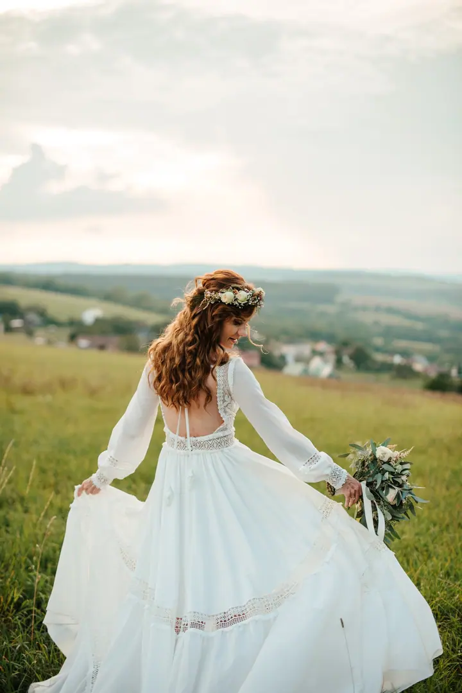
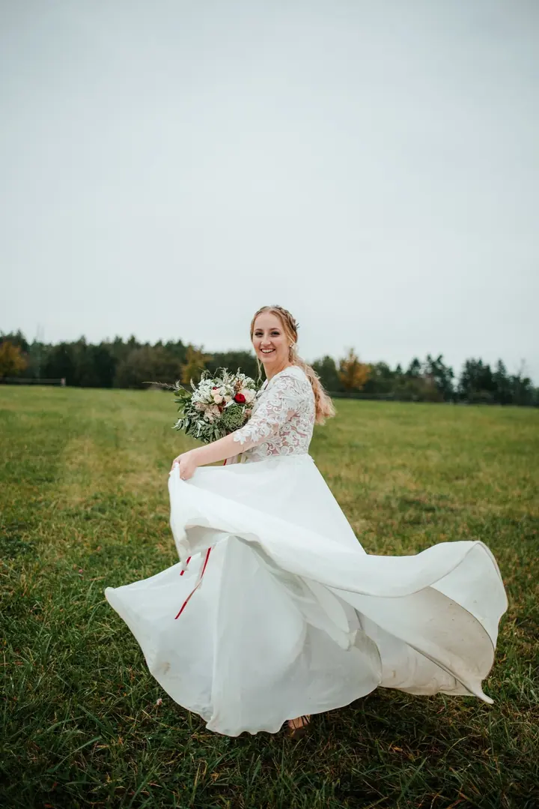
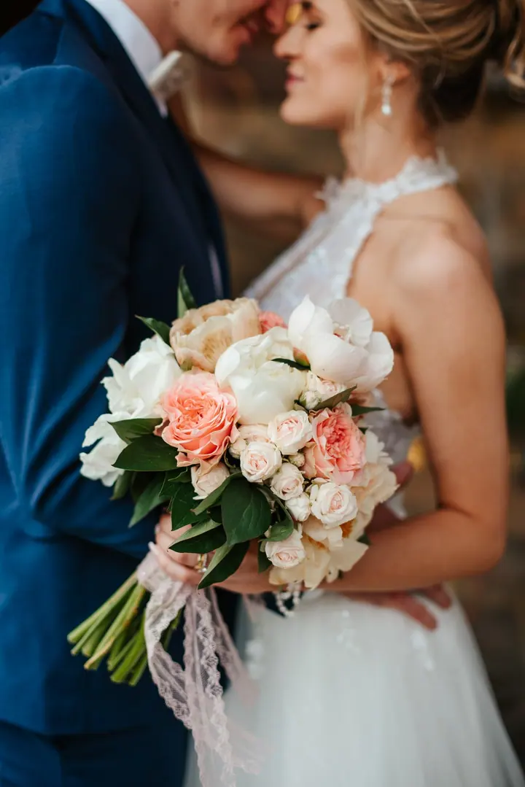
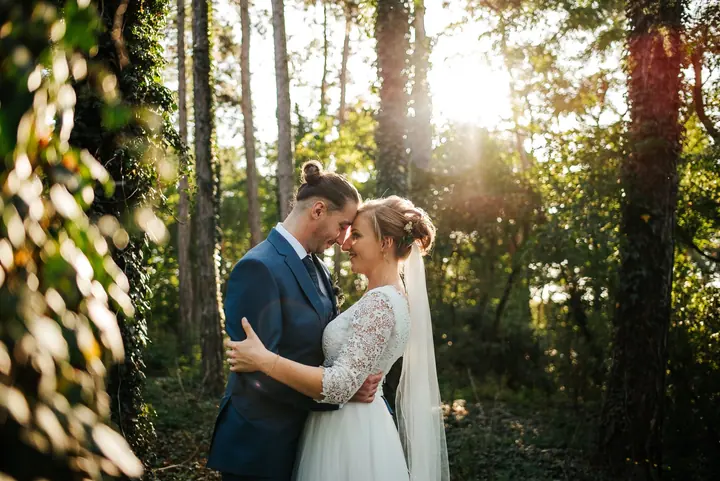

jedna
Svatby
Na vaší svatbě chci být kámoška, ne další dodavatel. Ročně fotím jen kolem deseti svateb, a tak mám čas vás poznat ještě před velkým dnem.

Svatební a rodinná fotografka · Příbram, Dobříš, Praha po domluvě

Jmenuji se Karolína, ale všichni přátelé mi říkají Kája. Jsem svatební a rodinná fotografka z Příbrami a nejradši fotím venku v přírodě, ideálně při západu slunce a v přirozeném světle.
Více o mně
Co fotím
jedna
Na vaší svatbě chci být kámoška, ne další dodavatel. Ročně fotím jen kolem deseti svateb, a tak mám čas vás poznat ještě před velkým dnem.
Focení formou procházky v přírodě, nejraději při západu slunce. Radím vám, co dělat, ale nelámu vás do nepřirozených póz.
Jsem takový celoživotní fotograf, od vašich prvních společných měsíců až po focení s vnoučaty. Fotíme venku na loukách, v lesích a na vyhlídkách kolem Příbrami a Dobříše.
Focení u vás doma v pohodlí domova, zaměřené na miminko a vaše pouto. Bez spěchu, přestávky na kojení jsou úplně normální.
Fotky, které budete milovat vy i další generace

Za objektivem
Je mi 31 let a fotím už desátým rokem. K fotografii mě naplno přivedla práce promotérky pro Nikon, kde jsem dostala kuráž jít do toho. Moje první svatba jako hlavní fotografka byla vodácká svatba u Vltavy s více než 150 hosty a tam jsem zjistila, že tohle chci v životě dělat.
Miluju pohodu, smích, lásku, přírodu a přirozené světlo. V úpravách se držím reálných barev s teplým podtónem. Ateliér u mě nehledejte, ten jsem kdysi měla, ale stejně jsme skoro vždycky fotili venku. Mým ateliérem jsou louky, lesy, pole a vyhlídky kolem Příbrami a Dobříše.
Dnes fotím jen kolem deseti svateb ročně, abych stíhala zažívat nejen vaše krásné okamžiky, ale i ten svůj život. Když zrovna nefotím, najdete mě na procházce s kočárkem, s naším malým Dominikem a psem Falcem, nebo na kole v Brdech.
Karolína
Vyplňte formulář v rezervacích a napište mi své představy. Do 1–2 pracovních dnů vám odpovím, potvrdím termín a pošlu průvodce s tipy na oblečení.
U svatby se nejdřív potkáme na kafe a pár měsíců před ní na předsvatební schůzce, po které vyrazíme fotit při západu slunce. Před rodinným focením se 1–2 dny předem domluvíme na místě podle počasí.
Focení pojmeme jako procházku v pohodové atmosféře. Radím vám, co můžete dělat, a zbytek nechám na vás, ať vzniknou přirozené fotky plné smíchu.
U rodinného a párového focení posílám do 2 týdnů náhledy, ze kterých si vyberete oblíbené. Finálně upravené fotky dostanete do 3–5 týdnů od výběru a platby, barevně i černobíle.
Portfolio
Otázky
Ne, ateliér u mě nehledejte. Fotíme venku v přírodě kolem Příbrami a Dobříše, kde vám ráda ukážu krásná místa. Miminka fotím u vás doma.
Bohužel ne. Dostanete ode mě vybrané a finálně upravené fotografie, a to v barevné i černobílé variantě.
Nejmenší balíček za 3 300 Kč zahrnuje 40–60 minut focení a 15 upravených fotek. Oblíbený balíček za 4 000 Kč má 1–1,5 hodiny focení a 25 fotek, balíček za 5 700 Kč 50 fotek.
Ideálně do 2 týdnů od narození, kdy jsou miminka spavější, ale fotit můžeme i později. Při rezervaci mi napište přibližné datum porodu.
Rodinná focení dělám v Příbrami, Dobříši a okolí, do Prahy jen po domluvě. Na svatbu za vámi ráda dorazím i dál.
Napište pár vět o tom, co si představujete. · +420 721 504 684